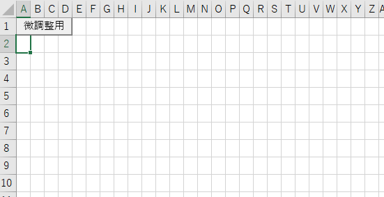

同人誌即売会サークルチェック支援ツール CircleCheckToolの使い方
このアプリケーションは卒業研究の一環として製作している同人誌即売会サークルチェック支援ツールです。
無料利用・即売会の種類が限定されない・キーワード検索が可能 の3つをコンセプトにTwitterAPIを用いて簡易サークルチェックを行うことを目指しています。
現在、五十音・アルファベットのスペース番号のみに対応しております。
1.連携アプリ認証
Twitterアカウントで連携アプリ認証をします。アカウントをお持ちでない方は先にTwitterアカウントを作成してください。
<連携アプリ認証>をクリックすると認証ページにリンクします。<連携アプリを認証>をクリックしてください。
なお、このアプリケーションはAPI認証時のみ読み取り情報を利用し、それ以外の情報の読み取りおよび書き込みをすることはありません。
2.サークル配置図の作成
入力用のサークル配置図ファイルを作成します。スペース番号のabの有無によりダウンロードするファイルを選んでください。
ここでは例としてスペース番号にabの区別がある場合のサークル配置図作成について解説します。
サークル配置図ファイルは以下のシートで構成されています。
・MAP(サークル配置図書き込み用)シート
サークル配置図を書き込むシートです。スペース番号にabの区別がある場合、1スペースを2列の幅を使って表現します。

・LIST(サークルリスト用)シート
サークルリストが書き込まれるシートです。
・CircleNo.：スペース番号
・Writer：著者(Twitterのユーザー名)
・TwitterID：TwitterのユーザーID
・Circle：サークル名
・Character：検索時に入力したキャラクター名
・Tweet：抽出元のツイートURL
・サークル配置図作成支援シート
サークル配置図の書き込み時にブロックごとの配置パターンおよびブロック名の範囲から同様の配置パターンで複数のブロックをMAPシートに生成し、サークル配置図作成を支援します。
[配置図の作り方]
サークル配置図作成支援シートのマクロを用いた配置図作成の方法を解説します。
1)生成するブロック名の範囲を選択します。
2)入力範囲にブロックごとの配置パターンを入力します。
※スペース番号にabの区別がある場合は入力例のように1スペースあたりを2列とし、左の列にスペース番号を入力してください
※入力時は必ずブロック名を1つ入力してください。
3)複製したい範囲を選択状態にします。
4)生成ボタンを押してください。
5)MAPシートに配置パターンの複製が生成されます。これを元にサークルチェックしたいイベントの配置図を作成してください。
6)作成が終了したらxlsx形式(マクロが含まれない形式)で保存してください。

3.サークルチェック
1)入力ファイルを選択します。2で作成したファイルを選択してください。(xlsx形式のみ入力できます)
2)サークルチェックしたいイベント名を入力してください。限定的な名前より一般名のほうがヒット率が上がります。略称等も含める場合は空白で区切って入力してください。
例)×東方紅楼夢15 ○紅楼夢
3)サークルチェックしたいキャラクター名や属性名を入力してください。複数ある場合は空白で区切って入力してください。
4)コミックマーケットなどの日を跨ぐイベントの場合は曜日・日にちを入力してください。それ以外のときは空欄にしてください。
5)<検索する>ボタンを押してください。検索件数によっては処理に時間がかかることがあります、しばらくお待ち下さい。
[注意]
現在(2019/10/17)、頻度はまばらですが検索時に原因不明のエラーが発生することがあります。この場合、何度かやり直すことで正常に検索できることがありますのでお試しください。
今後の改善として原因追求に努めて参ります。
4.出力されるファイルの見方
以下に出力例を示します。ただしプライバシー保護のため特定可能な情報は黒塗りで修正しております。
LISTシートではサークルチェックの検索条件に一致したサークルの情報についてリスト化し、キャラクター名ごとに色分けされます。サークル名が抽出できなかった場合、"no name"と表示されます。
サークルリストでは著者のTwitterIDおよび抽出元ツイートのハイパーリンクが貼られています。クリックすることによりそのリンクに飛ぶことができます。
また、MAPシートではLISTシートに対応したスペース番号のセルの背景色がキャラクターごとに色分けされ、カーソルを載せると対応したサークルの情報を表示します。
スペース番号にabの区別があるイベントの場合、aのスペースは左のセル、bのスペースは右のセルの背景色が色分けされます。
戻る